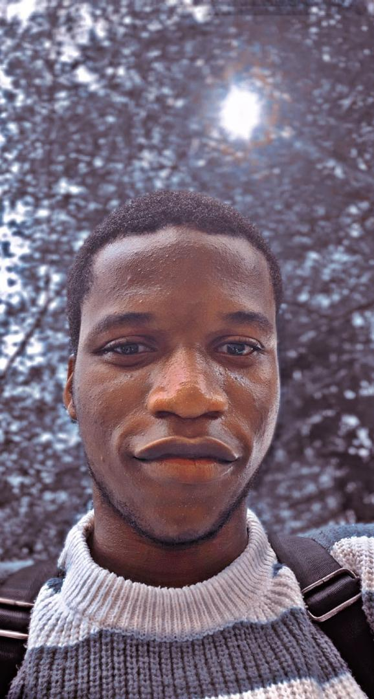

Ogunniyi Ibukun Omolayo

Goals and Objecives
- Skill Development
- Acquire essential skills in areas such as Communication, Front-end development, Back-end development, Leadership, Critical thinking and most especially Problem solving skils. My focus is on developing solutions that not only meet project requirements but also enhance client satisfaction and drive positive outcomes.
- Pratical Experience
- I am an aspiring web developer and business administration student eager to learn and grow in both fields. While I have no formal experience, I am dedicated to building my skills through online courses and practical projects. My goal is to integrate business principles with technical expertise to contribute effectively to a team and develop innovative web applications.
- Networking
- I am focused on building my professional network. I actively seek opportunities to connect with industry professionals and learn from their insights, aiming to integrate my skills in web development and business to contribute to innovative projects.
- Career Exploration
- I am committed to exploring diverse career paths. I actively engage with industry professionals to gain insights and broaden my understanding of various roles. My aim is to combine my interests in web development and business to identify a fulfilling career that contributes to impactful projects.
- Lifelong Learning
- I am dedicated to lifelong learning. I actively seek opportunities to expand my knowledge and skills through online courses and industry engagement. My goal is to integrate my interests in web development and business, continually evolving to contribute to meaningful projects that ensures clients satisfaction.
Education
- A student of Lagos State University (LASU)
- Studying Business administration and a certified online course on Web development
- O`level
- First School Leaving Certificate
- Basic Education Certificate
- Senior School Certificate Examination (SSCE)
skills
- Adaptability
- Interpersonal skill
- Marketing knowledge
- Time Management